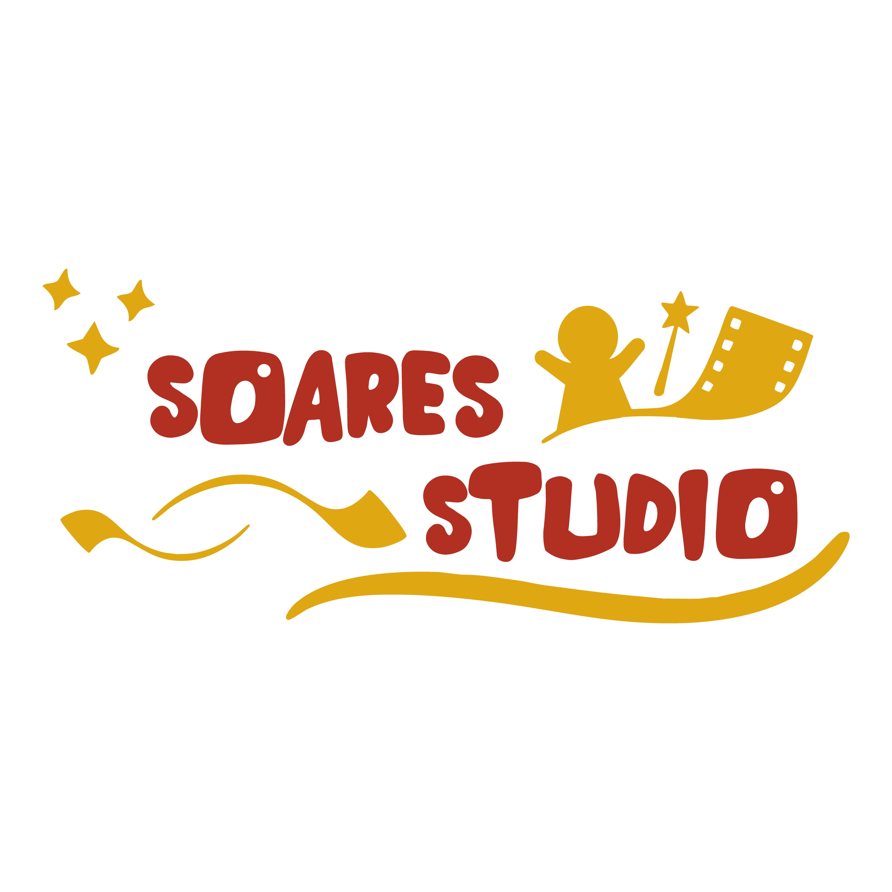

Nossas Apresentações


Teatro de fantoches

Produção e apresentação de espetáculos para escolas, eventos culturais e feiras do livro.

Criação de histórias originais e personagens que encantam públicos de todas as idades.
Desenvolvimento de vídeos, curtas e conteúdos criativos para internet e eventos.

A Soares Studio é uma produtora de entretenimento criativo com mais de 5 anos de experiência, dedicada a transformar histórias em experiências inesquecíveis para crianças, famílias e comunidades.
Nossa trajetória começou com apresentações de teatro em escolas. Com o tempo, o trabalho foi crescendo, conquistando novos públicos e chegando a diferentes tipos de eventos, como feiras do livro, projetos culturais e programações especiais realizadas por prefeituras, incluindo eventos natalinos.
Ao longo dos anos, desenvolvemos e apresentamos diversos espetáculos de teatro de bonecos, inspirados em universos conhecidos e também em histórias originais. Entre os trabalhos realizados estão peças inspiradas em Castelo Rá-Tim-Bum, no universo Disney, além de produções autorais e projetos especiais criados sob medida para eventos e instituições.
Hoje, a Soares Studio continua expandindo suas ideias e projetos, atuando também na criação de conteúdos audiovisuais, produções em vídeo, longas-metragens e histórias em quadrinhos, sempre com o objetivo de levar criatividade, diversão e imaginação para diferentes públicos.